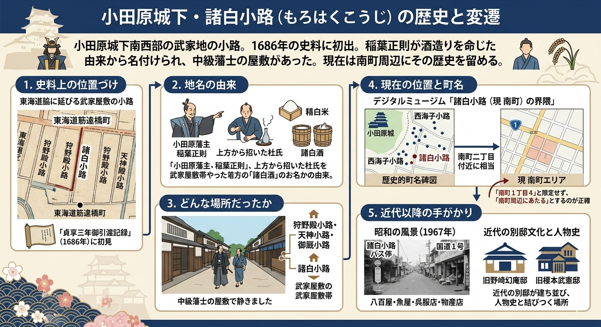

諸白小路（もろはくこうじ）
諸白小路は、小田原城下町の南西部にあった小さな道の名前である。
江戸時代初期、城主・稲葉正則が京都や大阪から酒造りの職人を招いて「諸白酒」をつくらせたことに由来し、今も南町周辺にその歴史をたどることができる。
初出史料
「貞享三年御引渡記録」（1686年）
地名の由来
京都や大阪から杜氏を招いて諸白酒を造らせたこと
図解画像

小田原城下の諸白小路について、由来と位置関係を図で整理した画像。
登場する地点の地図
諸白小路・南町周辺で紹介している主な地点を地図に示した。各地点をクリックすると説明が表示される。Google Mapsで詳しく見る場合は下記のリンクから。
線はOpenStreetMapに登録されている現在の道路です。灰色の点線は旧東海道（板橋旧道・本町〜新宿）です。スポットマーカーや小路・国道1号のラベルをクリックすると説明パネルが表示されます。同じマーカー・ラベルを再度クリックするか、パネルの閉じるボタンで非表示にできます。
2. 諸白小路に纏わる歴史的年表
諸白小路の成立から現代までの主な出来事を年表形式でまとめた。
南町・諸白小路周辺の主な出来事を時系列で示す。横軸は年尺に比例しており、各年の間隔が正確に把握できる。下記の各セクションはこの年表の時代区分に沿って整理した。
稲葉正則、小田原城主就任
徳川家康の家臣である稲葉正則が小田原城主となり、城下町の整備を開始。上方から杜氏を招いて諸白酒づくりを推進した。
万治図・かこながや
「万治図」の小田原城絵図に御船小屋と並んで水主長屋の地が記載される。城下の水運・船関連の労働者居住区であった。
御厩小路初出
「寛文九年火災報告に関する文書」に御厩小路が登場する。西海子小路交差点西側に藩の馬屋（御厩）があったことに由来する。
諸白・狩野殿・安斎小路など史料に
「貞享三年御引渡記録」に諸白小路・狩野殿小路・安斎小路などが記録される。武家地の小路として位置づけられた。
明治維新と武家制度廃止
武家屋敷地は民間に開放された。諸白小路の地名は次第に薄れ、南町という町名へ移る。
豆相人車鉄道・旧小田原駅
熱海方面への人車鉄道が開設された。早川口交差点付近に旧小田原駅（のち石碑が建つ）がある。
谷崎潤一郎・小田原事件
十字町（南町）在住中の谷崎。妻・千代子と佐藤春夫の三角関係に端を発する「小田原事件」が起きた。
旧松本剛吉別邸
貴族院議員・松本剛吉が南町二丁目に別邸を建設した。のち市歴史的風致形成建造物に指定され、一般公開される。
葉雨庵（野崎幻庵の旧別邸）
野崎幻庵が自怡荘内に茶室「葉雨庵」を建築した。のち松永記念館へ移築され、国登録有形文化財となった。
静山荘（望月軍四郎別邸）移築
望月軍四郎が農家住宅を南町に移築し別荘「静山荘」とした。諸白小路・西海子小路交差点付近にある。
小田原市史編纂
小田原市史（通史編上巻）が刊行された。諸白小路の歴史的背景が詳述される。
歴史的町名碑設置
小田原市が歴史的町名碑を設置した。諸白小路の位置が南町周辺として示される。
旧松本剛吉別邸指定
小田原市歴史的風致形成建造物に指定された。2019年市有化のうえ一般公開されている。
観光・文化資源として
諸白小路は城下町の歴史を伝える地名として、デジタルミュージアムや観光ガイドで紹介されている。南町一帯で町名碑・別邸・文学館等を巡れる。
I. 江戸時代の城下町
諸白小路と周辺の小路・町名は、江戸期の史料に現れる。地名の由来と城下町としての性格を整理する。
3. 史料上の位置づけ
諸白小路は、単なる町の名前ではなく、武家屋敷地へと続く道の名前として歴史に記録されている。
- 小田原市資料では、東海道筋から南へ延びる筋違橋町の小路として、 諸白小路・狩野殿小路・安斎小路 が並んで記されている。
- 諸白小路の初出は、1686年（貞享三年）の御引渡記録である。
4. 地名の由来
地名の由来は、酒造りの歴史にまつわる興味深い伝承である。
- 城主・稲葉正則の時代、京都や大阪から杜氏（酒造りの職人）を招いて諸白酒を造らせたことが由来である。諸白酒の語義・製法は下記の解説を参照。
諸白酒（もろはくしゅ）とは
諸白酒（もろはくしゅ）は、麹米と掛け米の両方に精白米を使用した日本酒の製法、またはその酒を指す。（日本語Wikipedia）
江戸時代以前は精米技術が未熟で玄米や片白（掛け米のみ精白）が主流だったが、諸白は透明度の高い上等酒として発展し、現代の清酒の原型となった。（sake-guide）
歴史的背景
16世紀頃に奈良の菩提山正暦寺で起源を持ち、「多聞院日記」（1576年）に初出する。（sake-guide）
伊丹諸白や灘の技法が広まり、元禄年間以降に標準化され、濁り酒から澄んだ清酒への進化を促した。（灘のけん）
5. どんな場所だったか
当時の諸白小路は、武家たちの生活空間として機能していた。
- 道の両側に、中級の武士たちの屋敷が並んでいたと考えられている。
- 周辺の狩野殿小路・天神小路・御厩小路も武家地で、城下町の武家屋敷帯を形成していた。
6. 詳細解説
史料・武家地の性格は前節までで触れた。ここでは現在地の捉え方のみ補足する。
現在地の捉え方
歴史的な小路は、現代の道路と完全に一致しないことが多い。諸白小路の場合、「南町周辺」という広いエリアとして捉えると、史料と現実のギャップを埋めやすくなる。
II. 明治〜昭和の南町
維新後の変遷、豆相人車鉄道、別邸文化、ゆかりの人物など、近代の南町を時系列でたどる。
7. 歴史的背景の詳細
諸白小路の成立と変遷を、城下町の歴史的文脈で詳しく見ていきよう。
稲葉正則と城下町の形成
地名の由来（諸白酒）は4章に述べた。稲葉正則（1592-1662）は徳川家康の家臣として小田原城主となり、城下町の整備に力を注いだ。上方から技術者を招いて酒造業を振興し、地域経済の基盤を築いた。
武家地の構造
城下町では武家屋敷が城の周囲に帯状に配置され、諸白小路はその一画で中級武士の居住区をなした。構造の概要は5章「どんな場所だったか」を参照。
明治維新後の変遷
武家制度の廃止により屋敷地は民間に開放され、諸白小路の名は薄れ南町へ移った。地名の記憶は史料・伝承として残り、観光資源となっている（年表1868年も参照）。
野崎幻庵の別荘「自怡荘」
野崎幻庵（野崎廣太）は、小田原の十字町・諸白小路（現在の小田原市南町）に別荘「自怡荘（じいそう）」を構え、その敷地内に茶室「葉雨庵」を建てていた。この別荘の跡地には、後にメガネスーパーの創業者が豪邸を建てたという歴史がある。
望月軍四郎について
望月軍四郎（もちづき ぐんしろう）は、明治〜昭和前期に活躍した日本の実業家・教育支援者・中国学研究者である。（日本語Wikipedia）
基本情報
- 1879年（明治12年）に静岡県富士郡大宮町（現・富士宮市）の農家に生まれ、1940年（昭和15年）に没した。（富士宮市の人物紹介）
- 慶應義塾の特選塾員でもあり、学問・教育への支援に熱心だった。（weblio）
実業家として
- 10代半ばで上京し、村上太三郎の商店で株式取引を学び、その後独立して証券仲買から身を起こした。（日本語Wikipedia）
- 日清生命保険社長、京浜電気鉄道・湘南電気鉄道・錦華紡績などの取締役会長、横浜倉庫社長、東京株式取引所理事など、多数の企業経営に関わった。（weblio）
教育・地域への貢献
- 出身地の大宮町で「大宮商業学校」「大宮工業学校」を設立し、現在の静岡県立富士宮北高等学校の源流の一つとなっている。（富士宮市の人物紹介）
- 大宮育英財団など育英事業を立ち上げ、奨学・教育支援に財産を投じた。（富士宮市の人物紹介）
小田原との関わり
- 小田原市南町に別荘「静山荘（旧望月軍四郎別邸）」を構え、現在は歴史的建造物として位置付けられている。（おだわらデジタルミュージアム）
8. 周辺地域との比較
諸白小路をより深く理解するために、周辺の小路との比較を見てみよう。
狩野殿小路
狩野殿小路は、小田原市南町にある歴史的な小路の名前である。（けまあけ）
江戸時代、この一帯は中級の藩士が住む武家地で、「貞享三年御引渡記録」（1686年）に初めて登場する。（0465.net）
地名の由来
小田原北条氏の家臣である狩野氏の宅跡に由来するとされ、絵師の狩野古法眼（狩野元信）が住んでいたという伝承もある。（けまあけ）
また、狩野小路（かのうこうじ）や金殿小路（かねどのこうじ）と表記されることもあり、小田原城南西部の旧町名として今も歴史探訪のスポットである。（0465.net）
安斎小路
安斎小路は、小田原市南町にある歴史的な小路である。（けまあけ）
小田原北条氏の侍医・田村安斎（栖）の宅があったことに由来する。（けまあけ）
歴史的背景
江戸時代の「貞享三年御引渡記録」（1686年）に記された武家地で、北条氏政・氏照兄弟が豊臣秀吉の小田原攻め後にこの地で自害したという伝承がある。（けまあけ）
小田原城西部の武家屋敷街に位置する。（けまあけ）
天神小路
天神小路は、小田原市南町にある歴史的な小路である。（けまあけ）
江戸時代の「貞享三年御引渡記録」（1686年）に「御花畑小路」として初出後、「東海道分間延絵図」（1789～1806年）から天神小路と呼ばれるようになった。（けまあけ）
地名の由来
東海道を隔てた北方の天神社に由来し、道の両側は中級藩士の武家地だった。（けまあけ）
御花畑小路の名は一部区間に残る。（けまあけ）
御厩小路
御厩小路は、小田原市南町にある歴史的な小路である。（けまあけ）
「寛文九年火災報告に関する文書」（1669年）に初出で、小田原藩の馬屋（御厩）が西海子小路との交差点西側にあったことに由来する。（けまあけ）
歴史的背景
承応2年（1653年）、藩主・稲葉正則が馬を見に来た記録が残り、熱海街道の起点でもあった。（けまあけ）
東海道筋から南へ延びる武家地の小路の一つである。（けまあけ）
かこながや（水主長屋）
かこながや（水主長屋）は、小田原市南町にある歴史的な町地名である。（0465.net）
江戸時代、稲葉氏が藩主の頃、この地に御船小屋の隣で水主（水軍の船乗り）の長屋があったことに由来する。（小田原市）
歴史的背景
「万治図」（1660年）の小田原城絵図に「御船小屋」と並んで記載され、城下町の水運・船関連の労働者が住む地域だった。（0465.net）
町名碑が現存する。（けまあけ）
旧松本剛吉別邸
旧松本剛吉別邸は、小田原市南町二丁目にある大正時代建築の歴史的建造物である。（松本剛吉記念館）
明治・大正期の政治家・松本剛吉（貴族院議員）が大正12年（1923年）頃に建て、山縣有朋と親交が深かった人物ゆかりの別邸である。（松本剛吉記念館）
特徴
数寄屋風主屋、茶室「雨香亭」、待合からなる建物群と、築山・水景を備えた回遊式庭園が特徴で、近代小田原の別邸文化を象徴する。（小田原市）
平成28年（2016年）に小田原市歴史的風致形成建造物に指定され、2019年に市有化後、一般公開されている。（松本剛吉記念館）
歴史的変遷
松本没後、東京府農工銀行頭取・鈴木茂平、日本橋木綿商・岡田正吉の所有を経て現在に至る。（松本剛吉記念館）
谷崎潤一郎と南町（旧十字町）
谷崎潤一郎は小田原市南町（旧十字町）にゆかりがある。（0465.net）
大正時代に南町の十字町で数年間暮らし、長女・鮎子が花園幼稚園に通っていた。（駒澤大学）
小田原事件
1919年頃の「小田原事件」で有名で、妻・石川千代子と佐藤春夫の三角関係が発端となり、親友との絶交劇が起きた。（Scrapbox）
この地で執筆活動を行い、小田原文学館でも谷崎ゆかりの資料が展示されている。（小田原市）
『陰翳礼讃』
谷崎潤一郎の『陰翳礼讃』は、1933年（昭和8年）に発表された随筆で、日本伝統美の本質を「陰翳」（光の当たらない暗がりや影）に求めている。（umiumiseasea）
西洋の明るく直接的な美意識に対し、日本人は闇や間接光の中で金箔、漆器、和紙、建築の幽玄な美を愛でる、と論じている。（iroai）
主なテーマ
- 家屋と陰影: 障子や床の間が作り出す微妙な光のグラデーションを絶賛し、電灯の過剰な明るさを批判。（青空文庫）
- 漆器・金蒔絵: 暗闇でほのかに輝く金色の美しさを「沈痛な美」と表現。（umiumiseasea）
- 能や伝統文化: 暗さが生む荘厳さを、現代の照明過多と対比。（iroai）
小田原在住時の谷崎の美学が色濃く、現代デザインや建築にも影響を与える名著である。（緑風出版）
- 狩野殿小路: 諸白小路の西側に並行して走る小路。狩野氏の宅跡に由来し、絵師・狩野元信の居住伝承もある。上記の解説を参照。
- 安斎小路: 諸白小路の東側に位置。北条氏の侍医・田村安斎（栖）の宅跡に由来。上記の解説を参照。
- 西海子小路: 小田原城の南側（現在の小田原市南町周辺）にある、旧武家屋敷街の面影を残す歴史的な小路。谷崎潤一郎ゆかりの地でもある。名称は、この地にサイカチの木が植えられていたことに由来するといわれる。現在の地名としては、小田原市南町二〜三丁目付近で、東海道（国道1号）の南側に並行して通る横町である。江戸時代末期には、中級藩士の武家屋敷が道の両側に十八軒並んでいたとされ、城下の武家地として整った町並みだった。藩主稲葉家の時代の史料「永代日記」にも地名が見られ、近世から知られた通り名である。現在は「小田原文学館」「白秋童謡館」へのアプローチとなる通りで、文学者ゆかりの地としても知られている。桜並木が有名で、春には桜のトンネルができる小田原屈指の花見スポットになっている。
- 旧松本剛吉別邸: 南町二丁目。大正12年頃、貴族院議員・松本剛吉が建てた別邸。数寄屋風主屋・茶室「雨香亭」・回遊式庭園。市歴史的風致形成建造物、一般公開。上記の解説を参照。
- 静山荘: 諸白・西海子交差点付近。実業家望月軍四郎の旧別邸で、農家を移築した別荘。市の優れた建造物に位置づく。詳細は上記の望月軍四郎の項を参照。
- 天神小路: 旧称は御花畑小路。東海道北方の天神社に由来し、中級藩士の武家地。上記の解説を参照。
- 御厩小路: 西海子小路との交差点西側に藩の馬屋（御厩）があったことに由来。上記の解説を参照。
- かこながや（水主長屋）: 御船小屋の隣に水主（水軍の船乗り）の長屋があったことに由来する町地名。万治図に記載。上記の解説を参照。
これらの小路はすべて東海道筋から南へ延び、城下町の格子状区画を形成していた。
III. 現代の南町
現地の見どころ、観光情報、参考リンクをまとめる。
9. 現代の観光・訪問情報
諸白小路の歴史を現代の視点から楽しむための情報。
小田原駅跡（豆相人車鉄道）
小田原駅跡は、現在のJR小田原駅（1920年開業）より南東の早川口交差点付近、国道1号線沿いに位置する、豆相人車鉄道の旧小田原駅の跡地を指す。（sloway）
明治29年（1896年）に熱海方面への陸上輸送路として開設された人車鉄道の駅で、現在は石碑が建っている。（sloway）
歴史的背景
豆相人車鉄道は人力で客車を引く珍しい鉄道で、小田原宿の衰退後に地域交通を支えた。（sloway）
東海道本線熱海線の開通後、役割を終え廃止されたが、小田原の交通史を伝える遺構として残っている。（sloway）
メガネスーパー
メガネスーパーは1973年に神奈川県小田原市で田中八郎が有限会社ニュー湘南眼鏡として創業した眼鏡販売チェーンである。（日本語Wikipedia）
1980年に埼玉の同名会社と統合し株式会社化、2004年に株式上場、2007年ピーク時には540店舗・380億円を記録したが、2011〜13年に債務超過に陥り再建へ向かった。（weblio）
再建と変遷
2013年に星崎尚彦社長が就任し、「アイケアカンパニー」へ転換。検眼・サービス強化でV字回復し、現在はビジョナリーホールディングスの子会社として、2023年売上238億円規模で全国展開を続けている。（メガネスーパー）
自怡荘跡地に同社創業者が豪邸を建てた経緯は、野崎幻庵の別荘「自怡荘」の項を参照。
小田原のういろう
小田原のういろうは、室町時代から続く外郎（ういろう）家が作る伝統的な蒸し菓子である。（ちえのともしび）
元々は家伝薬「透頂香（とうちんこう）」の製作者である外郎家が、賓客接待用に考案したもので、米粉・砂糖・水を主原料にモチモチとした柔らかい食感が特徴である。（ういろう本店）
歴史
1368年（応安元年）に元朝から渡来した陳延祐が起源で、北条早雲の招きにより1504年頃に小田原に移住し、現在も25代続く老舗「ういろう本店」で販売されている。（ちえのともしび）
江戸時代には東海道の名物として『東海道名所記』やケンペルの『日本誌』に記され、小田原城下町の象徴となった。（日本語Wikipedia）
特徴
白・緑・紅などの棹物（棒状）が主流で、さっぱりした上品な甘さが魅力である。薬菓子として保存性が高く、全国のういろう文化の源流である。（味彩会館）
対潮閣跡
対潮閣跡は、小田原市南町1-5-32付近にある山下亀三郎別邸の遺構で、日露戦争の英雄・秋山真之の終焉の地として知られる。（歴史の風景）
山下汽船（現・商船三井）創業者・山下亀三郎が大正期に建てた海の見える豪邸で、現在は石垣・釣鐘石・通用門が残っている。（note）
歴史的エピソード
大正7年（1918年）2月4日、盲腸炎悪化により秋山真之海軍中将がここで49歳で逝去した。山縣有朋の古稀庵（現・清閑亭）近くに位置し、明治の別邸文化を象徴する。（郷土史）
近隣の静閑亭や旧松本剛吉別邸とともに、小田原南町の近代史スポットである。（4travel）
北村透谷碑
北村透谷碑は、小田原市南町2丁目の小田原文学館敷地内にある、明治の思想家・文学者北村透谷（1868-1894）を顕彰する記念碑である。（文学散歩）
昭和4年（1929年）に小峰公園の大久保神社境内に建立され、島崎藤村が碑文「北村透谷に献ず」を揮毫、牧雅雄が雪崩造りのデザインを担当した。（LocalWiki 小田原）
変遷
昭和29年（1954年）に小田原城址公園へ、平成23年（2011年）に城再整備に伴い文学館へ移転した。除幕式も震災で延期されるなど波乱の歴史を持つ。（丹沢夢工房）
透谷の生誕地（現・浜町）や小田原事件の谷崎潤一郎と並び、南町の文学史スポットとして位置づけられている。（おだわらデジタルミュージアム）
白秋童謡館
白秋童謡館は、小田原市南町にある小田原文学館の別館で、北原白秋の童謡関連資料を展示する施設である。（小田原市）
大正13年（1924年）に元宮内大臣・田中光顕の別邸として建てられた木造2階建ての和風建築で、登録有形文化財に指定されている。（小田原市）
白秋と小田原
大正7～15年頃に小田原在住中、「赤い鳥小鳥」「揺籠のうた」「からたちの花」など生涯の半数以上の童謡を創作した。「木兎の家」の模型や直筆原稿が展示され、白秋童謡の散歩道の起点としても知られる。（おだわらデジタルミュージアム）
尾崎一雄邸
尾崎一雄邸は、小田原文学館敷地内に移築保存されている、私小説家・尾崎一雄（1899-1983）の旧宅「冬眠居」の書斎部分である。（note）
元々は小田原市曽我谷津にあった戦後建築で、8畳と4畳の書斎、広縁、書庫からなり、柱・建具・天井・旧宅の瓦9割以上を再利用して平成18年（2006年）に移築された。（ameblo）
特徴と意義
『暢気眼鏡』などの作品で知られる尾崎が創作に励んだ空間を再現し、現在は屋外から観覧可能である。北村透谷碑や白秋童謡館と並び、小田原の文学遺産を象徴する。（小田原市）
- アクセス: 小田原駅から徒歩15-20分。南町周辺を散策すると良い。
- 歴史的町名碑: 南町二丁目に設置。諸白小路の位置を示す標識がある。
- 周辺スポット: 小田原城址公園、小田原宿、鈴廣かまぼこ博物館などと合わせて訪れると、城下町の雰囲気を満喫できる。早川口交差点付近には豆相人車鉄道の旧小田原駅跡（石碑）もある。
- 注意点: 現代の道路事情で小路の形状は変化している。史料と照らし合わせながら歩くと面白い。
10. 関連リンク（外部サイト）
-
小田原市公式：歴史的町名碑の設置場所について
https://www.city.odawara.kanagawa.jp/field/lifelong/property/topics/tyoumeihi.html -
おだわらデジタルミュージアム（概要）
https://odawara-digital-museum.jp/about/ -
おだわらデジタルミュージアム（デジタルアーカイブ一覧）
https://odawara-digital-museum.jp/archive/list/ -
おだわらデジタルミュージアム（まちなみ写真：諸白小路関連）
https://odawara-digital-museum.jp/photo/machinami/12/ -
小田原市：小田原デジタルアーカイブ案内
https://www.city.odawara.kanagawa.jp/encycl/ -
参考：小田原城街歩きガイド（城下町町名）
https://www.scn-net.ne.jp/~yanya/cyoumei.html -
野崎幻庵の別荘（諸白小路関連）
https://yhistoricalplace2.web.fc2.com/historical_place/youan/index.html -
メガネスーパー創業者の豪邸（自怡荘跡地）
https://rarea.events/event/195726
11. 参考文献・史料
- 小田原市史編纂委員会『小田原市史 通史編 上巻』小田原市、1975年
- 小田原市教育委員会『小田原城下町の歴史的町名』小田原市、2006年
- おだわらデジタルミュージアム所蔵史料
- 『貞享三年御引渡記録』（1686年） - 諸白小路初出の史料
12. まとめ
諸白小路は、1686年の史料に登場する武家地の小路名である。由来は稲葉正則時代の諸白酒づくりで、当時は中級武士の屋敷が並んでいた。現在は南町周辺にその歴史をたどることができ、周辺の小路との比較や現代の観光情報も参考に、城下町の魅力を深く味わえる。